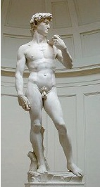

1501 yılında Floransa Cumhuriyeti, Michelangelo’yu Floransa Katedrali’nin ön cephesine bir Davut heykeli yapmakla görevlendirdi. Eski Ahit kralı – gençliğinde dev Goliath’ı yok etmiş olan kahraman bir savaşçı –Toskana şehrinin koruyucusu olarak görülüyordu. Görev öncelikle, pahalı bir mermer kütlesini mahvettikten kısa bir süre sonra ölen başka bir sanatçıya verilmişti. Efsaneye göre, Michelangelo işi aldı çünkü “mahvolmuş” taşla çalışmaya istekli olan bir başkası yoktu. Michelangelo heykeli 1504’te bitirdiğinde heykelin kilisenin yukarısına yerleştirilmesi uygun bulunmadı. Onun yerine heykel Floransa’nın merkezinde olan Piazza della Signoria’nın üzerinde Palazzo Vecchio’nun önüne yerleştirildi.

Yüksek Rönesans’ın en gösterişli başyapıtlarından biri olan heykel Goliath’a saldırmadan hemen önce gergin halde bekleyen Davut’u gösterir. Bu, Donatello’nun ünlü çalışmasında gösterdiği zafer dolu genç değil, harekete geçmeye hazır bir ergendir. Klasik modellerden esinlenmiş olan Michelangelo, asil başını sola çevirmiş ve ağırlığını bir bacağına vermiş şekilde duran güzel, atletik bir vücut oydu. Davut’un kasları, devi kılıçtan geçirmeye hazırlanmak için güç toplayarak şişmişti. Fazla geniş elleri ve ayakları, ergenlerin tipik olarak çarpık oranlarını ve gelecekteki kuvvetinin vaadini haber vermektedir.
Michelangelo’nun biyografi yazarı Giorgio Vasari’nin yayımladığı bir anekdota göre, bir Floransa vatandaşı olan Pietro Soderini, Davut’un burnunun çok büyük olmasından yana şikâyet etmişti. Eleştiriye cevaben Michelangelo, burnunu küçültmüş gibi yaptı. Heykeltıraşın işi bittiğinde Soderini “Şimdi ona hayat verdin!” diye haykırdı.
Heykel, ilk Piazza della Signoria’nın üstünde dikildiğinde, büyük ihtimalle figürü cumhuriyetin bir sembolü olarak gören sürgündeki Medici klanının destekçileri tarafından taş yağmuruna tutuldu. 1527’de sol kolu, bir ayaklanma sırasında kırıldı. Heykel, çeşitli unsurların ve kirlenmenin neden olduğu zarardan kurtarılmak üzere1873’te Piazza’dan kaldırıldı. Güvenli bir şekilde Güzel Sanatlar Akademisi’ne yerleştirildiğinde, bir kopyası da orijinal yerine kondu. 1991’de işine engel olunan bir İtalyan ressam, orijinal heykele çekiçle saldırarak heykelin ayak parmaklarından birini parçaladı.
Heykel, yapılmasının 500’üncü yıldönümü arifesinde damıtılmış su ile temizlendi. Daha çok kir oluşumunu önlemek için kalıcı bir buhar püskürtme sistemi kurulmasına dair planlar tartışılmaktadır.
Bugün “Davut”, Galleria dell’Accademia’da Michelangelo’nun II. Julius’un mozolesi için tasarladığı dört adet bitirilmemiş köleleri gibi diğer heykelleri ile birlikte görülebilir.
EK BİLGİLER:
1. Biri Michelangelo, diğeri ise Donatello tarafından yapılan iki Davut heykeli olduğu bilinmektedir.